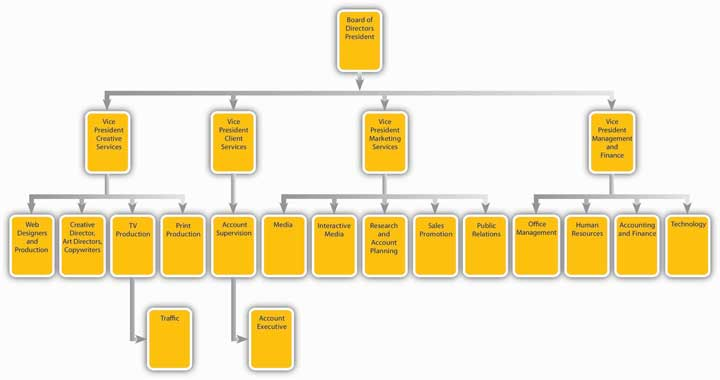
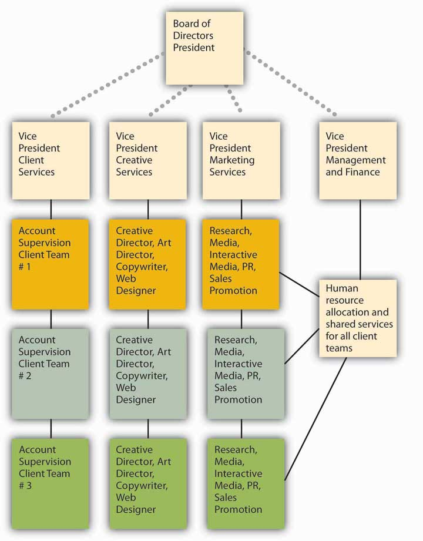
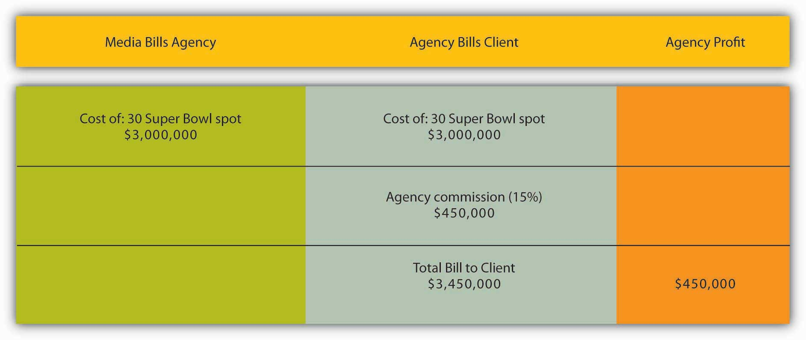
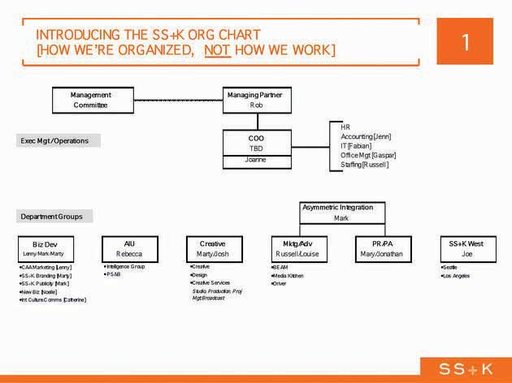

After studying this chapter, students should be able to do the following:
There are several different types of advertising agencies. Each type has its advantages and disadvantages, depending on the client’s needs and budget and the marketing problem the client is aiming to solve.
Full-service agenciesAgencies that provide clients with all the services they need, including planning, creating, producing, and placing the ads; research and evaluation; PR, design, and event planning. provide clients with all the services they need for the entire advertising function. This includes planning, creating, producing, and placing the ads, as well as research before the campaign and evaluation after it to assess the campaign’s effectiveness. Full-service agencies have expanded in recent years through consolidation—larger agencies buy them when they want to provide a one-stop shop for their global clients. In the process, the types of services that agencies provide has expanded to include PR, design, and event planning.
Figure 2.9 Typical Full-Service Agency Organization
Figure 2.10 Matrix Organization in Advertising Agency
Some agencies focus on one aspect of the creative process, such as creative production work or media buying. They refer to themselves as specialized agenciesAgencies that focus on one aspect of the creative process, such as media or interactive.. Some examples will include a company that specializes in media planning and buying, such as The Media Kitchen or Greater Than One. Interactive agencies like BEAM, gaming agencies such as Fuel Games, and search agencies such as 360i will partner up with other agencies to provide services for the full campaign as determined by the client or the lead agency. These agency partners all contributed to the msnbc.com campaign led by SS+K.
Some companies prefer to retain control over advertising and set up in-house agenciesAgencies set up within the corporation, typically run by an advertising director who chooses which services to buy and which to perform internally. within the corporation. An advertising director typically runs the in-house agency; she chooses which services to buy and which to perform internally. For example, the in-house agency could retain creative services in house, create advertisements itself, and then purchase media-buying services from the outside. The inside agency may buy services from a specialized service agency or buy services à la carte from a full service agency.
Why bother to form an in-house agency? The two main reasons are to save the company money and to give the company greater control over the entire process. In addition, internal employees may have a deeper understanding of the company and its customers than would an outside agency. Insiders can also coordinate the promotion better with the firm’s overall marketing program and other functions, such as ensuring that enough products are made and delivered in advance of a promotion. Target works with their in-house agency as well as with outside agencies. They do not have an outside agency of record.
Agencies also clarify their specializations in terms of location; SS+K, for example, is a U.S. agency. Some agencies are considered global agencies, such as JWT, TBWA, BBDO, and others. These agencies have offices worldwide and specialize in clients whose audiences are worldwide, such as MasterCard (McCann Worldwide is the agency).
There are a few holding companies that own a number of agencies to create a network of agencies that can work together in the network. Omnicom Group, WPP, Interpublic Group, MDC Partners are the biggest media holding companies.
In addition to the types of agencies, there is also the role that the agency plays in the client’s business. The most common and secure relationship is the agency of record, or lead agency. As clients may work with many different agencies for their various needs, the agency of recordAgency that has the closest relationship with the marketer in terms of strategy and spending. The marketer determines their agency of record, and the majority of business and coordination is handled through them. is the lead agency partner and usually has the majority of the client’s business. SS+K is the agency of record for msnbc.com.
The traditional approach to farm out different functions may change if some big clients get their way. Johnson & Johnson and Dell are but two of several major advertisers that are dissatisfied with this strategy. More specifically, they join Procter & Gamble and others to call for more collaboration between the people who do the consumer research and the people who actually create the ads. In most cases, separate companies carry out communications planning and creative functions, so coordination can be difficult, and self-serving biases may color some decisions. For example, an advertising agency might be tempted to suggest a network television campaign because it would be involved in creating the ads (and billing more in the process). Instead, advertisers prefer a media-agnostic approach, where the agency picks whatever medium works best for a specific campaign. We saw earlier that SS+K strongly endorses this philosophy.
P&G reacted to this problem when it shifted all its ad and marketing duties for its Oral B brand to a newly created team at Publicis Groupe that will not work on any other brands. As P&G’s global marketing officer explained, “We find many of our brands are working with lots of agencies who all have their own creative people, their own planners, their own account people, and it gets to be unmanageable.” Only time will tell if other advertisers follow P&G’s lead.Suzanne Vranica, “Ad Houses Will Need to Be More Nimble: Clients are Demanding More and Better Use of Consumer Data, Web,” Wall Street Journal, January 2, 2008, B3; Suzanne Vranica, “J&J Joins Critics of Agency Structure: Consumer Researchers and Creative Teams Shouldn’t Be Separate,” Wall Street Journal, May 11, 2007, B4.
Historically, an agency receives a commission or percentage of the cost of the media it buys for the client. Traditionally, mass media has paid advertising agencies a 15 percent commission on all business brought to them. The commission covers the agency’s copywriting, art direction, and account service charges. Today, this compensation model makes less sense because many advertising services no longer include a traditional media buy.
Figure 2.11
Here is an example of how agency compensation works for a single commercial during the Super Bowl.
The straight 15 percent commission is still used in some cases, but some agencies charge less than 15 percent, or have sliding scales based on how much the client spends (the more money spent, the lower the percentage fee). Some agencies offer flat-fee arrangements that clients and the agency agree upon, while others charge on an hourly basis. Others will do a combination of a flat base fee plus smaller percentages per media. Interactive media currently charges the highest commission because it requires the most management time from agency personnel.
Other innovative models include licensing fees or royalties for ideas. Some even use performance feesA system of payment in which the agency’s fee depends on the success of the campaign., in which the agency’s fee depends on the success of the campaign. The client and the agency define what they mean by “success” at the start; they might measure this by looking at how well consumers recall the ads or might measure actual product sales. Agencies using performance-based models can earn much more—or much less—than the standard 15 percent commission. The rationale, however, is that the compensation would be tied to the value of the ideas. As we’ll see later, the question of just how—and whether—we should quantify the effect of advertising is one of the burning issues the industry faces.
We group clients into three main categories:
Account managersAgency executives who work with clients to develop the complete promotion plan. (with titles like account executive, account supervisor, or account manager) work with clients to identify the benefits a brand offers, to whom it should focus its messages (the target audience), and the best competitive position. They then develop the complete promotion plan.
On the market research side, account plannersAgency employees who work with clients to obtain or conduct market research that will help clients understand their markets and audiences. from the agency work with clients to obtain or conduct research that will help clients understand their markets and audiences.
Creative services staffAgency employees such as art directors or copywriters who work with clients to develop concepts and messages. (such as an art director or copywriter) work with clients to develop the concepts and messages that will catch consumers’ interest and attention.
Media buyersEmployees who purchase the advertising space and negotiate prices. and media plannersEmployees who gather information about consumers’ viewing or reading habits and combine it with knowledge of media vehicles to find the best placement for the advertising. evaluate the multitude of options available for ad placement—now greatly expanded by the Internet. They decide how best to allocate the client’s budget to use the best media to most effectively reach the target audience.
A variety of ancillary companies support ad agencies by providing specialized services.
Art studios and design firmsAncillary companies that support ad agencies by creating a client’s logo, stationery, business cards, and packaging design for products. create a company’s logo, stationery, business cards, and packaging design for products.
Film/video companiesAncillary companies that support ad agencies by producing film and video for TV and the Web. produce film and video for TV and the Web, including infomercials.
Web designersAncillary companies that support ad agencies by creating Internet media for advertising. create Internet media for advertising.
PrintersAncillary companies that support ad agencies by producing printed material for a variety of media channels. produce printed material for a variety of media channels.
Sales promotion agenciesAncillary companies that support ad agencies by handling sales promotions such as price discounts, sampling, rebates, premiums, trade shows, in-store merchandising, and point-of-purchase displays. handle price discounts, sampling, rebates, premiums, trade shows, in-store merchandising, and point-of-purchase displays.
Research companiesAncillary companies that support ad agencies by assessing channel viewership, ad response, consumer attitudes, and trends. assess channel viewership, ad response, consumer attitudes, and trends.
If you’re interested in advertising, you can work at an ad agency, at an advertising client (manufacturer, trade reseller or service firm), or in the media. Jobs in ad agencies (including in-house agencies) typically fall into four main categories:
Account managersAgency employees who act as the client’s representative, getting the best work from the agency while still generating a profit for the agency. act as the client’s representative at the agency, getting the best work from the agency for the client while still generating a profit for the agency. Account managers must be good at working with people and acting as leaders or strategists to communicate the client’s needs to the agency team. The best account managers learn as much as they can about the client’s business. The career ladder of position titles in account services is assistant account executive, account executive, senior account executive, and accounts supervior or accounts manager.
The creative department generates the ideas, images, and words of the advertising message. Art directorsThe chief designer of the ad, responsible for using principles of design to create the ad’s visuals and unify its elements and for deciding how the message will communicate the desired mood, product qualities, and psychological appeals. (assistant art director, junior art directors, art directors, senior art directors) develop the artistic strategy of the creative campaign, often presenting several concepts for the client to choose among. CopywritersMember of the creative team who composes memorable and motivating text that will be spoken or printed within the ad. (junior copywriter, copywriter, senior copywriter, copy chief) are responsible for developing the words of the campaign. Production staffEmployees who select photos, choose the print size and type, and oversee the actual printing, filming or audio recording of the campaign. (layout workers, graphic artists, production managers) select photos, choose the print size and type, and oversee the actual printing, filming, or audio recording of the campaign.
Media planners gather information about people’s viewing or reading habits and combine it with information about specific media vehicles (such as a specific magazine’s target audience, circulation size, and advertising space costs) in order to find the best placement for the advertising. They use their judgment to balance reaching the greatest number of people in the target group versus keeping the client’s costs to a minimum. Media buyers purchase the advertising space and negotiate prices. They must be good with numbers but also skilled negotiators—they’ll be working with budgets and responsible for spending their client’s money wisely.
Market researchersEmployees who learn all they can about the target customer by using focus groups and interviews, test reactions to campaigns, and secondary information. learn all they can about the target customer—their wants, desires, fears, and goals. They use focus groups and one-on-one interviews, test reactions to campaigns, and purchase secondary information (such as the total market size in a given location). Job titles include public opinion researcher, research supervisor, project director, associate research director, research director, and executive research director.
Advertising jobs in the media include the advertising directorEmployee in a media company who heads the advertising sales department and oversees advertising rate policies, promotion, and the sales staff, including sales planners and sales reps., who heads the advertising sales department and oversees advertising rate policies, promotion, and the sales staff, including sales planners and sales reps.
Within a company, the jobs of the advertising department typically parallel those in ad agencies, but there is an additional category: brand manager. Brand managersEmployees of a company that produces goods or services to be advertised, who are responsible for all the advertising and marketing for their product or brand. are responsible for all the advertising and marketing for their product or brand. This includes the marketing strategy, business planning, and market research associated with the brand. The brand manager works closely with account services and creative staff to develop and implement campaigns best suited for that brand. Brand managers oversee the selection and work of any outside ad agencies used by the corporation.
SS+K needs to have a formal management structure, and this is what it looks like. However, the agency doesn’t tend to pay much attention to formalities, so these little boxes aren’t as solid as they look.…
Figure 2.12 SS+K’s Structure
Figure 2.13 This Is How SS+K Works
The advertising industry is complex, and many different types of skills are required to create a successful ad campaign. Career possibilities abound for people who are artistic, good at writing, analytical, and creative.